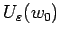
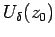
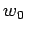
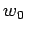
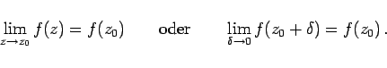

Inhalt Index DeskTop Bronstein

 Funktionentheorie Funktionen einer komplexen Veränderlichen Stetigkeit, Differenzierbarkeit
Funktionentheorie Funktionen einer komplexen Veränderlichen Stetigkeit, Differenzierbarkeit


Eine Funktion w = f(z) heißt an der Stelle z0 stetig, wenn es zu jeder vorgegebenen, beliebig kleinen Umgebung  eines Punktes w0=f(z0) der w-Ebene eine Umgebung  des Punktes z0 der z-Ebene gibt, deren durch w = f(z) vermittelte Bildpunkte ganz in liegen. Wie in der Abbildung dargestellt, ist z.B. ein Kreis mit dem Radius  um den Punkt .
um den Punkt .
Es gilt dann
|  | (14.2) |
Der Grenzwert der Funktion w ist gleich dem Funktionswert der unabhängigen Variablen.